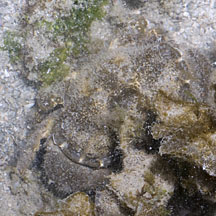
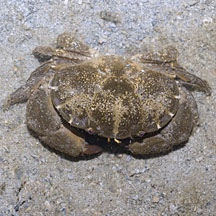
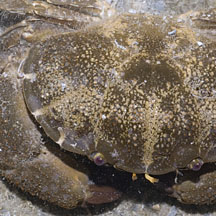
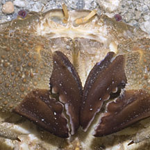
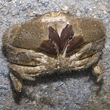

|
|
| crabs text index | photo index |
| Phylum Arthropoda > Subphylum Crustacea > Class Malacostraca > Order Decapoda > Brachyurans > Family Xanthidae |
| Curry
puff crab Platypodia granulosa Family Xanthidae updated Dec 2019 Where seen? This brown crab with distinctive notches on the side of its body is sometimes seen on our reefs and coral rubble, usually well camouflaged. Features: Body width 4-6cm. Body and claws chocolate brown and covered with large rounded bumps. Smooth sides on the body edges with regular notches highlighted in pale bars that make the creature resemble a curry puff or pie. Pincers large and thick with dark brown claws. Like other brightly coloured Xanthid crabs, it is probably poisonous. Sometimes mistaken for the more commonly seen Floral egg crab (Atergatis floridus). Status and threats: This crab is listed as 'Endangered' in our Red List of threatened animals of Singapore. |
 Terumbu Raya, Jul 11 |
 |
 |
|
 |
 |
| Curry puff crabs on Singapore shores |
On wildsingapore
flickr
|
| Other sightings on Singapore shores |
|
Links
References
|